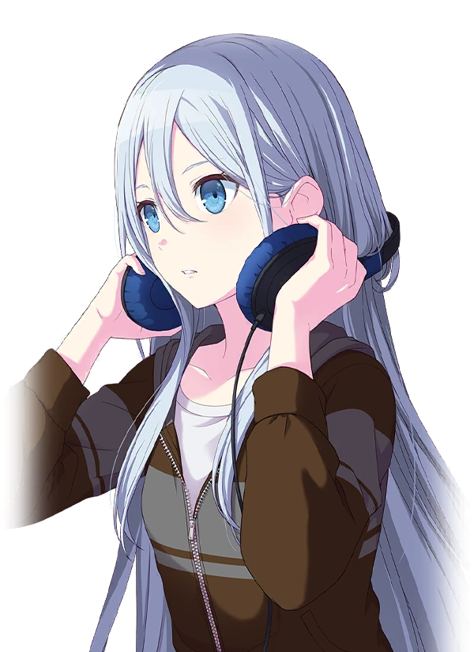

Shinonome Akito is a first-year high school student who fully dedicates himself to music. He acts as the leader of the group and one of the main vocalists. He and Mizuki form a duo sub-unit called Aki2, or Aki-squared.
Shinonome Akito
Akiyama Mizuki is a first-year high school student who desires to just be themself. They are one of the DJs of the group. They form a duo sub-unit with Akito called Aki2, or Aki-squared.
Akiyama Mizuki

Yoisaki Kanade is a second-year high school student who is searching for what music means to her. She is one of the DJs of the group. She and Saki form a duo sub-unit called TECHNO ★ Fever.
Yoisaki Kanade
Tenma Saki is a first-year high school student who works to live a fulfilling life with her chronic illness. She is one of the main vocalists of the group. She and Kanade form a duo sub-unit called TECHNO ★ Fever.
Tenma Saki
Fever ★ Break is a musical performing group formed by two vocalist-DJ duos, with a common goal of fulfilling their dreams outside of society's definitions of "normal". They focus heavily on community and discovering what music means to them, performing for themselves and nobody else. Their group name refers to breaking expectations and hyping up the crowd, as well as their unique performance style wherein Saki uses a virtual model to perform due to her chronic illness.
Music Sample: "DAYBREAK FRONTLINE" by Orangestar, featuring Fever ★ Break